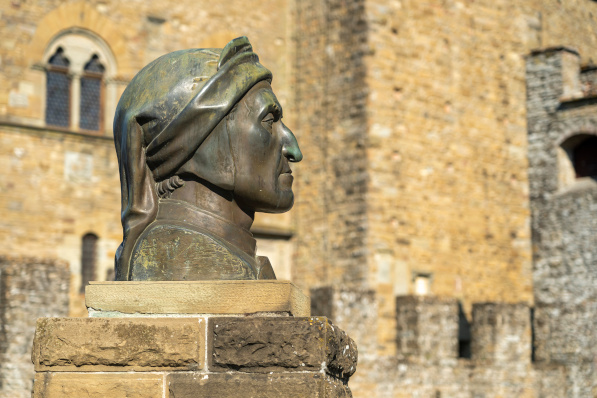

Noticias
Le Vie di Dante: de Florencia a Ravenna a través de los Apeninos siguiendo los pasos del Poeta Supremo
Noviembre 3, 2021Por Giusseppe Tortellini
Veintiún tramos y una ruta de 395 kilómetros, desde el lugar de nacimiento de Dante Alighieri en Florencia hasta su tumba en Rávena, cruzando los Apeninos y sumergiéndose en bosques silenciosos y pueblos históricos, cascadas y castillos de la Edad Media: con motivo de la muerte número 700 de Dante aniversario, recomendamos Le Vie di Dante (Caminos de Dante), un emocionante recorrido que narra el exilio del "padre" de la lengua italiana, desde la Toscana hasta Emilia Romagna. Lonely Planet incluyó esta ruta en su Best in Travel for 2021 como mejor “Caminata Cultural” entre las experiencias de turismo sostenible premiadas.
Los mismos caminos recorrió este eminente escritor cuando huyó de Florencia, después de que los güelfos lo condenaran a muerte por su aprobación gibelina. A partir de ese momento, Dante abandonó definitivamente Florencia (nunca volvería a su ciudad natal), pero en su viaje aventurero más allá de los Apeninos en busca de protección, se inspiró en su obra más famosa: la Divina Comedia.
Las palabras de Dante nos trasladan a un viaje atemporal, que aún hoy podemos revivir, total o parcialmente, rastreando sus hazañas a lo largo del camino de Florencia a Rávena. El punto de partida de esta ruta de Dante es la Casa-Museo di Dante, en Via Santa Margherita, en el centro de Florencia; La llegada es la tumba de Dante en el centro de Rávena, la ciudad donde Dante terminó su exilio, completó su escritura de la Divina Comedia y donde murió en septiembre de 1321.
Esta ruta a través de los Apeninos está salpicada de etapas y referencias poéticas a Dante y la Divina Comedia: entre los lugares más emblemáticos están Pontassieve, donde se dice que Dante se encontró con Beatrice, la cascada Acquacheta, mencionada en el Canto XVI del Infierno, la Chiesa di San Godenzo, en Val Montone, donde Dante participó en el encuentro de los gibelinos exiliados y los güelfos blancos, el Castillo de Romena, que albergó a Dante durante varias temporadas durante su exilio, pero también la ciudad amurallada de Poppi con el Castillo de los Conti Guidi. , Faenza, ciudad artística e histórica, y Brisighella con su increíble fortaleza medieval.